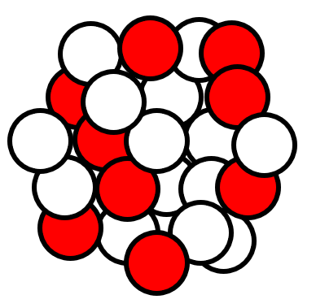

Kernzerfall & Halbwertzeit
Zerfall von Cubetonium
Würfelmodell: Jeder Würfel ist ein Kern, ein Treffer zerfällt. Alles ist als Ein-Screen-Arbeitsfläche angeordnet.

Atomkerne
Verbleibende Cubetonium-Atome: 50
Auswertung
Blau: N(t), Rot: ΔN
| Zeit |
|---|
| ΔN |
| N |